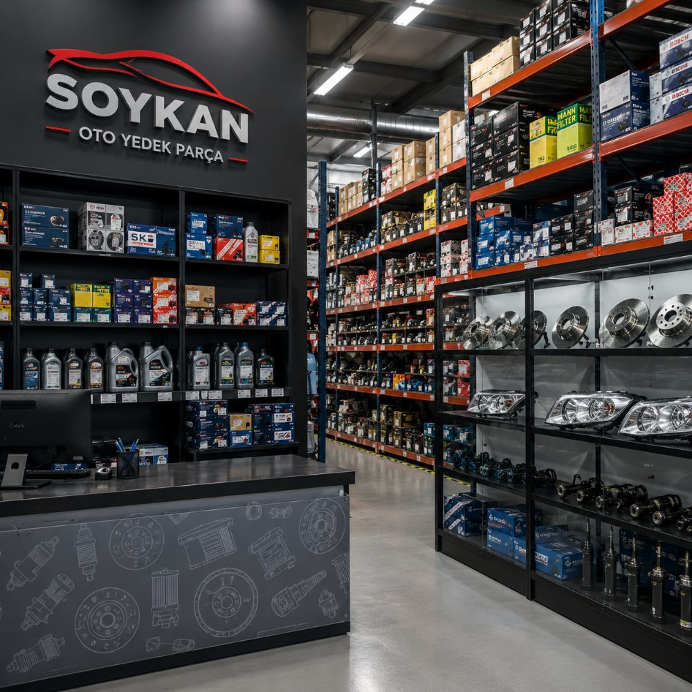

Orijinal & Muadil Parça
Marka standartlarına uygun orijinal parçaların yanında, uygun fiyatlı ve kaliteli muadil seçenekleri bir arada sunuyoruz.
Soykans Oto olarak orijinal ve muadil otomotiv yedek parçalarını geniş stok, titiz kalite kontrol ve hızlı tedarik anlayışıyla bir araya getiriyoruz. Her marka ve model için ihtiyacınız olan parçayı güvenle bulmanız için buradayız.

Soykans Oto Araç Yedek Parça Sanayi ve Ticaret Limited Şirketi, Kaynarca Mahallesi'nden İstanbul'un dört bir yanına hizmet veren, otomotiv yedek parça sektörüne odaklanmış bir tedarik kuruluşudur. Bizim için her araç, yolda geçirdiği her kilometrede sürücüsüne güven vermek zorundadır; bu güvenin temelinde ise doğru seçilmiş, kaliteli ve uyumlu parçalar yatar.
Motor, şanzıman, fren, süspansiyon ve elektrik gruplarından filtre, kayış ve sarf malzemelerine kadar geniş bir yelpazede orijinal ve muadil parçaları bir arada sunuyoruz. Her ürünü, aracın marka ve modeline uygunluğu, dayanıklılığı ve güvenlik standartları açısından değerlendiriyoruz. Amacımız yalnızca bir parça satmak değil; aracınızın performansını ve yol güvenliğinizi uzun vadede korumaktır.
Sektörde kalıcı olmanın yolunun şeffaflıktan ve sürdürülebilir ilişkilerden geçtiğine inanıyoruz. Bu nedenle stok yönetimimizi ihtiyaçları önceden görecek şekilde planlıyor, tedarik süreçlerimizi hız ve doğruluk üzerine kuruyoruz. İster tek bir parça arayan bir sürücü, ister düzenli tedarik bekleyen bir servis olun; Soykans Oto'da aradığınız çözümü net, anlaşılır ve güvenilir bir hizmet anlayışıyla bulursunuz.
Doğru parça, doğru zamanda ve doğru fiyatla. İşimizi bu üç ilke üzerine kuruyor, her adımda aracınızın ve bütçenizin yanında oluyoruz.
Marka standartlarına uygun orijinal parçaların yanında, uygun fiyatlı ve kaliteli muadil seçenekleri bir arada sunuyoruz.
İhtiyacınız olan parçayı en kısa sürede temin edebilmeniz için tedarik süreçlerimizi hız ve doğruluk üzerine kurguladık.
Farklı marka ve modeller için geniş bir ürün yelpazesi; sık kullanılan parçalarda kesintisiz stok bulunabilirliği.
Doğru parçayı seçmenizde size yol gösteren, sektörü tanıyan bir ekiple teknik danışmanlık sunuyoruz.
Misyonumuz; her sürücünün ve servisin aradığı otomotiv yedek parçasına, kalite ödününden kaçınmadan ve makul koşullarla ulaşmasını sağlamaktır. Doğru bilgilendirme, şeffaf fiyatlandırma ve dürüst hizmet anlayışıyla; parça tedariğini karmaşık bir süreç olmaktan çıkarıp güvenilir bir deneyime dönüştürmeyi hedefliyoruz. Her işlemi, karşımızdaki aracın yol güvenliğini gözeterek yürütüyoruz.
Vizyonumuz; İstanbul ve çevresinde otomotiv yedek parça denildiğinde akla ilk gelen, güvenilirliğiyle referans gösterilen bir kuruluş olmaktır. Ürün çeşitliliğimizi ve hizmet kalitemizi sürekli geliştirerek, teknolojiye ve değişen araç ihtiyaçlarına uyum sağlayan; müşterileriyle uzun soluklu ilişkiler kuran, sektöre değer katan bir marka olma yolunda ilerliyoruz.
Bir aracın ömrü, yalnızca kilometresiyle değil; kullandığı parçaların kalitesi ve birbirleriyle uyumuyla ölçülür. Motorun sessiz çalışması, frenlerin ilk dokunuşta tepki vermesi, direksiyonun yolu doğru okuması; hepsi arka planda birbirine bağlı onlarca parçanın uyum içinde çalışmasının sonucudur. Bu nedenle otomotiv yedek parça seçimi, çoğu zaman sanıldığından çok daha kritik bir karardır.
Uygun olmayan ya da kalitesiz bir parça, kısa vadede sorunu çözmüş gibi görünse de uzun vadede daha büyük arızalara, güvenlik risklerine ve beklenmedik maliyetlere yol açabilir. Örneğin standartların altındaki bir fren balatası duruş mesafesini uzatabilir; uyumsuz bir kayış zamanla motor grubunu zorlayabilir. Bu yüzden doğru parçayı seçmek; sadece bir maliyet kalemi değil, sürüş güvenliğine ve araç değerine yapılan bir yatırımdır.
Soykans Oto olarak yaklaşımımız, her parçayı aracın ihtiyacı bağlamında değerlendirmek üzerine kuruludur. Orijinal parçanın sunduğu tam uyumun yanında, bütçe dostu ve kaliteli muadil çözümleri de değerlendirir; hangi seçeneğin sizin aracınız ve kullanım biçiminiz için daha doğru olduğunu açıkça paylaşırız. Stoklarımızı sık talep edilen parçaları önceden görecek şekilde planlar, tedarikte hız ile doğruluğu birlikte gözetiriz. Amacımız, parça tedariğini tahmine dayalı bir süreç olmaktan çıkarıp; bilgiye, güvene ve şeffaflığa dayanan bir hizmete dönüştürmektir.
Sorularınız, parça talepleriniz veya iş birliği önerileriniz için bize ulaşın. Ekibimiz en kısa sürede size dönüş yapar.